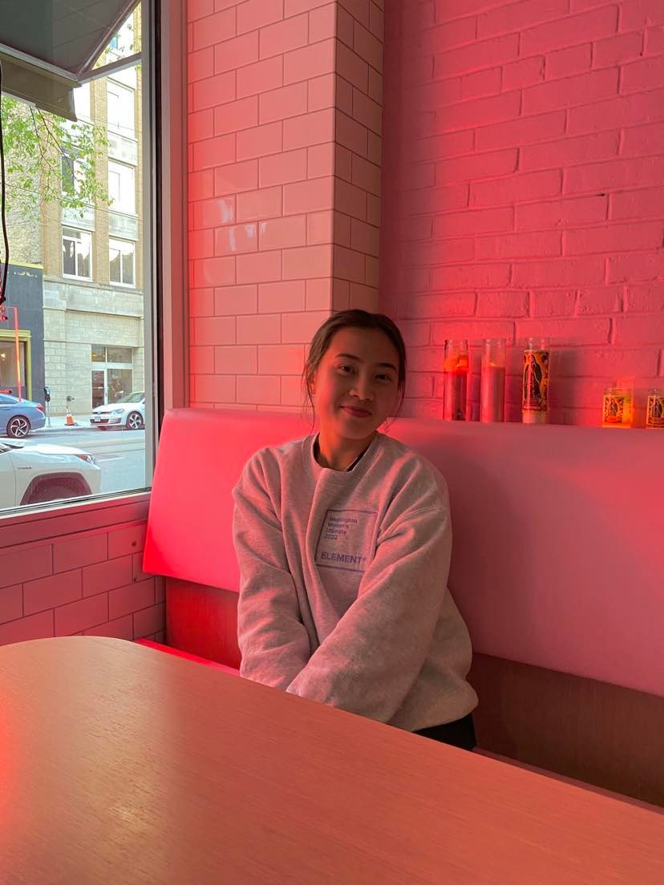

I am Kelly

In the 2023-2024 school year, I was Vice President of the student association in my major, Human Centered Design & Engineering for. The reason I joined HCDEsa is to connect with my peers and get more involved within my community for my final year at UW. My main responsibilities as VP include planning the social & professional development events throughout the school year alongside the president and filling in for the president when they are absent. I also support the other officers in their roles. Ultimately, I bring together the team by making sure that everyone is on the same page with our schedule/weekly meetings and organizing team bonding activities.
In terms of my career goals, I enjoy working as a UX designer and a developer. Upon getting accepted into HCDE, I was introduced to the social aspect of technology involving user research and design. Now I try to find ways to incorporate design into my work. I strive to create as well as innovate technology in a way that helps people in their daily lives.
In my free time, I like to play ultimate frisbee and volleyball or engage in an outdoor activity. I enjoy watching K-dramas, listening to music, and eating food.